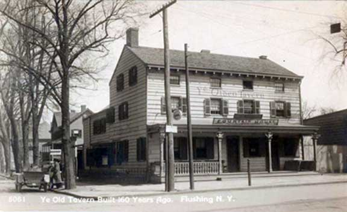
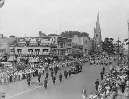
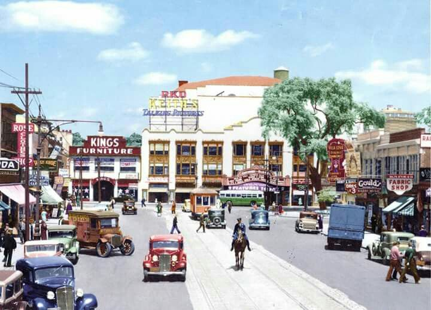
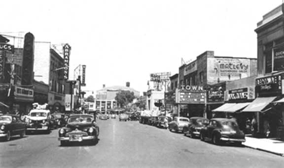
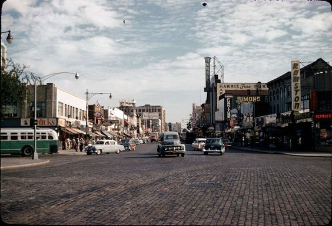
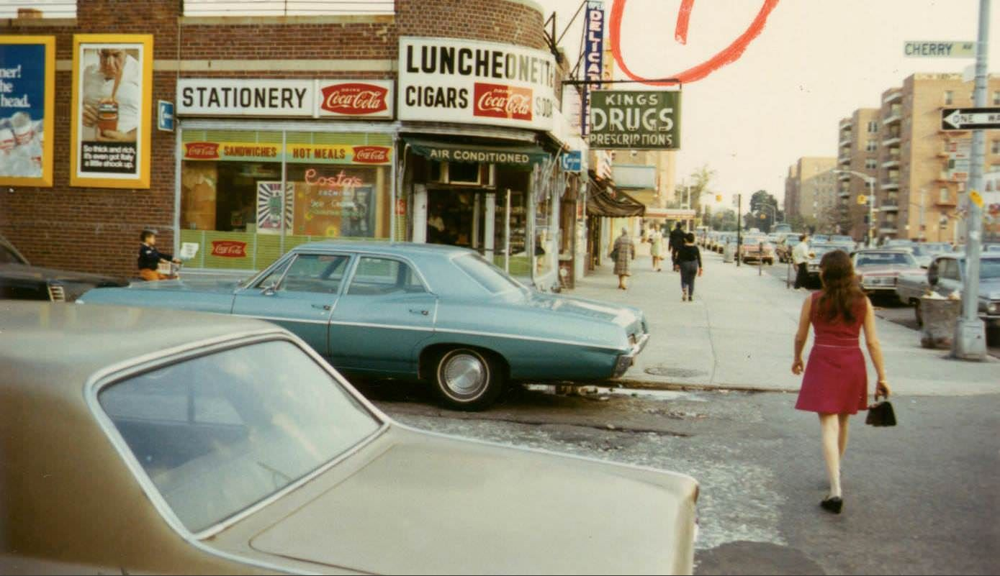
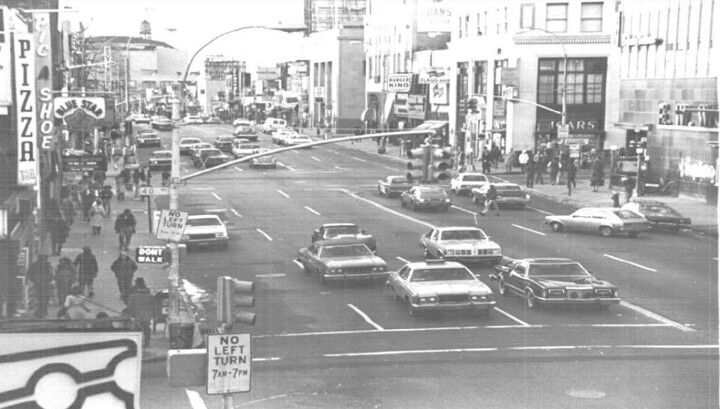
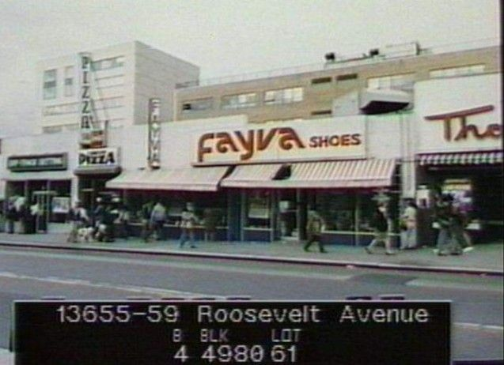

CHINATOWN HISTORY
Little canton
At first, it was known as “_____” due to the Cantonese-speaking immigrants that came from the province of Canton — known today as Guangzhou — in southeastern China.
Opium War and Taiping Revolution
Overseas, in the southern region of China where people were reeling from the economic and class instability resulting from the _____
Page Act of 1875
One of the earliest laws against Chinese immigrants was the _________, which prohibited the entry of Chinese women.
racial exclusion and self protection
Chinatowns were borne out of necessity due to _______, says Min Zhou, director of UCLA's Asia Pacific Center and professor of sociology and Asian American Studies.
found gold
The story of many historic Chinatowns across the United States began in 1848 when James W. Marshall______ in Northern California.
Chinese Exclusion Act in 1943
After China became an ally to the United States during WWII, the U.S. repealed the _____ and allowed Chinese immigrants to be naturalized as citizens.
racial exclusion, self protection, Informal housing restrictions, segregation against Asians
Chinatowns were borne out of necessity due to______
New Amsterdam
The name “_______” made its first appearance in an official Dutch document in 1614. It all started on Oct 10, 1645, with early Dutch and English colonists who built and self-governed in the Town of Flushing.







